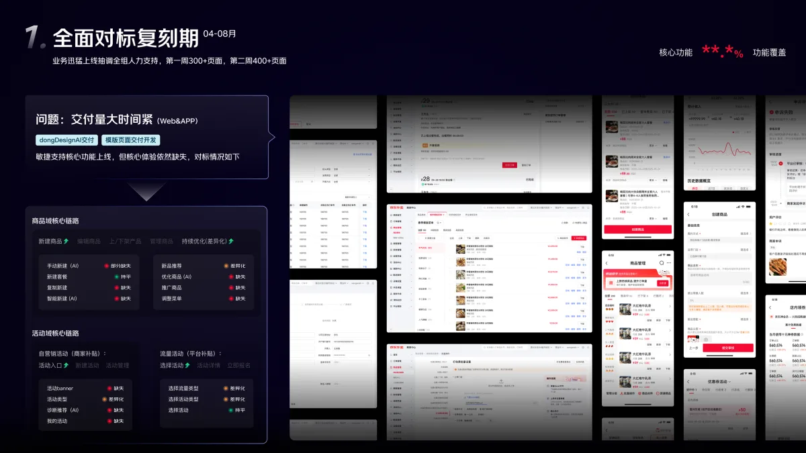
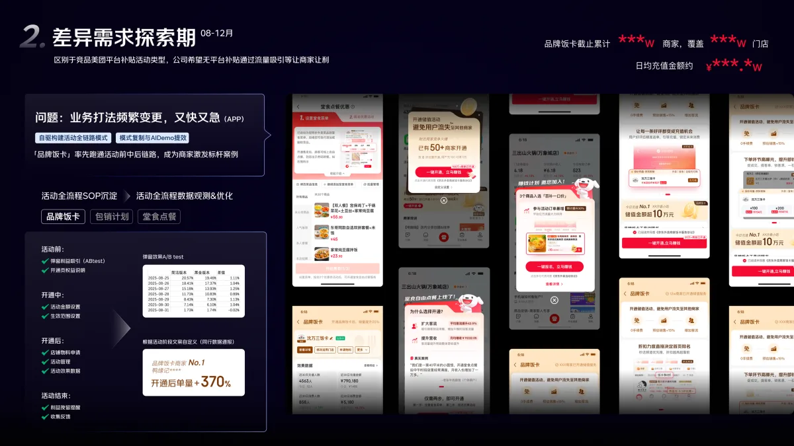
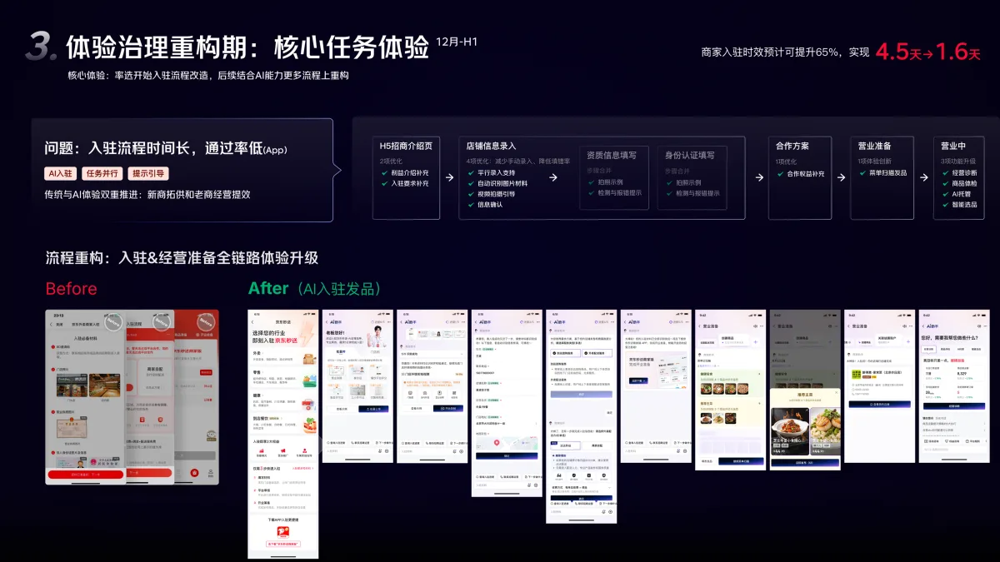
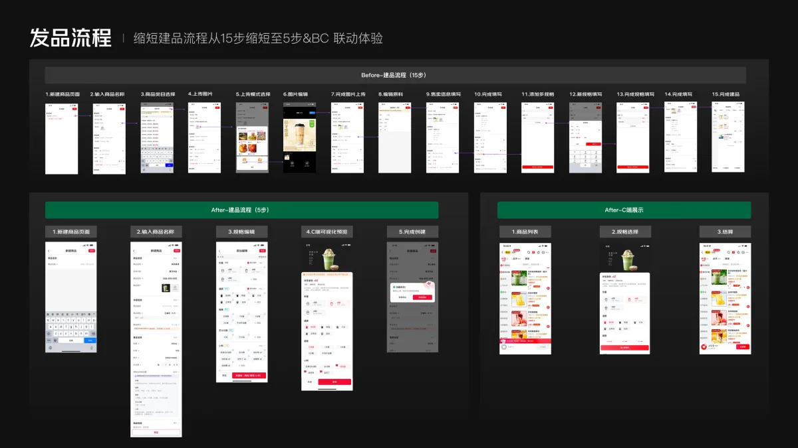

项目背景
京东外卖商家端从零起步，需要快速补齐基础经营能力，探索无补贴的商家自运营模式，并支撑百万门店入驻。我主导商家端从零到一的全链路体验搭建，通过模板化交付、AI 流程重构和营销范式沉淀，支撑平台 300 万以上门店拓展，兼顾功能追赶、商家提效与业务增长。
核心挑战
- 交付压力 双端并行迭代，需求集中爆发，人力瓶颈明显。
- 转化瓶颈 入驻链路冗长，填写成本高，通过率偏低。
- 增长局限 缺少补贴抓手，需要设计自运营增长玩法。
项目目标
补齐基线能力
沉淀营销范式
重构核心链路体验
Phase
基线追赶：DongDesignAI 模板体系，承接爆发式交付
- 痛点
- 双端同步迭代，页面量大，体验缺口多。
- 策略
- 搭建 DongDesignAI 模板交付体系，通过标准化页面模板与设计 Wiki 批量产出，并聚焦体验盘点。
- 成果
- 半年核心功能覆盖率达到 88.6%，快速搭建商品、活动、上下架等基础经营能力。
- 核心价值
- 用 DesignOps 推进工程化提效，把人力从重复页面交付中释放出来。

Phase
差异化探索：沉淀活动 SOP，打造品牌饭卡标杆
- 痛点
- 缺少补贴资源，需要找到适合商家的自运营玩法。
- 策略
- 搭建覆盖活动前、中、后的 SOP，通过 A/B 测试迭代激发素材，沉淀店激发和品激发两套营销范式。
- 成果
- 品牌饭卡覆盖 110 万门店，日均充值 555.2 万，商家开通后单量提升 370%。
- 核心价值
- 通过 B 端营销设计驱动商家自主增长。

Phase
体验重构：移动端招商 AI 入驻，助力新商拓供
- 痛点
- 传统分页表单步骤多、信息分散，录入成本高，入驻周期长。
- 策略
- 用伴随式 Agent 分步引导，自动识别资质并预填信息，兼容 AI 对话和传统表单双模式。
- 成果
- 入驻时长由 4.5 天缩短至 1.63 天，时效提升 65%，任务步长缩减 50.6%。
- 核心价值
- 将复杂的 B 端填表任务改为对话式引导。

Phase
体验重构：以品类特色实现 BC 联动体验创新
- 痛点
- 商家配置商品后难以预判消费者端的展示效果，需要反复修改规格。
- 策略
- 前瞻设计聚焦规格展示，将商家端商品配置与消费者端展示联动。
- 成果
- 建品流程从 15 步缩短为 5 步。
- 核心价值
- 先用饮品类商品完成前置概念验证，再将配置方式复制到糕点、西餐等品类。
